1、程序分析
在正式开发之前，首先需要对程序进行简单的分析。只有合理的分析程序界面以及要实现的功能之外，才能更好的开发这个软件。
如下：
应用场景：随着互联网信息的高速发展，越来越多的网站诞生，每个网站可能都需要注册账号密码才能登陆，如果使用了重复的密码无疑是有风险的，但是使用不同的密码又会产生忘记密码的问题。因此根据此场景可以开发一个简易的密码管理软件，这样既可以规避风险，又能防止忘记密码。
运行平台：视窗平台，win7及以上系统。
界面设计：可能需要用到三个窗口，后续软件需要升级，再根据需求在决定是否增加或删除窗口。
分别如下所示：
主窗口：
主窗口由有四个按钮和一个超级列表框组成，超级列表框中用于显示已经保存过的账号密码等信息。
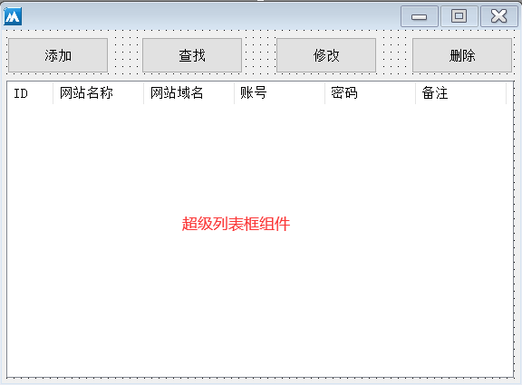
添加修改窗口：
在点击主窗口中“添加”或“修改”按钮后弹出的窗口，用于添加或修改信息。
因这两个功能类似，因此可以使用同一个窗口来解决，无需单独建立添加窗口和修改窗口。
至于按钮组件的标题，可通过载入窗口后，将其修改成“添加”或“修改”。
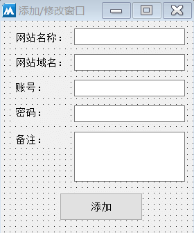
查找窗口：
在点击主窗口中的“查找”按钮后弹出的窗口，根据组合框和编辑框提供的条件信息，从而在已经保存的数据中搜索到想要的内容。
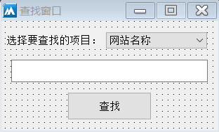
功能分析：
(1) 软件启动后连接SQLite数据库并从数据库获取已经保存的密码到超级列表框中显示。
(2) 点击添加按钮，弹出添加修改窗口，输入相关信息后执行sql语句添加数据到SQlite数据库中，并刷新列表框内容。
(3) 点击查找按钮，弹出查找窗口，输入条件后，根据条件在超级列表框中查询信息，并将查询结果高亮显示。
(4) 点击修改按钮之前，首先需要判断列表框有没有选中一个项目，如果有选中，则弹出添加修改窗口，并将列表框选中项的数据填充到添加修改窗口中，便于修改操作。
(5) 点击删除按钮，同样也需要判断列表框是否有选中项目，如果有的话取出唯一的ID，通过ID在SQlite数据库中删除数据。
2、程序开发
2.1 项目创建
利用快捷键“Ctrl + Shift + N”打开项目创建窗口，根据需求选择一个视窗平台下具有窗口的项目模板。
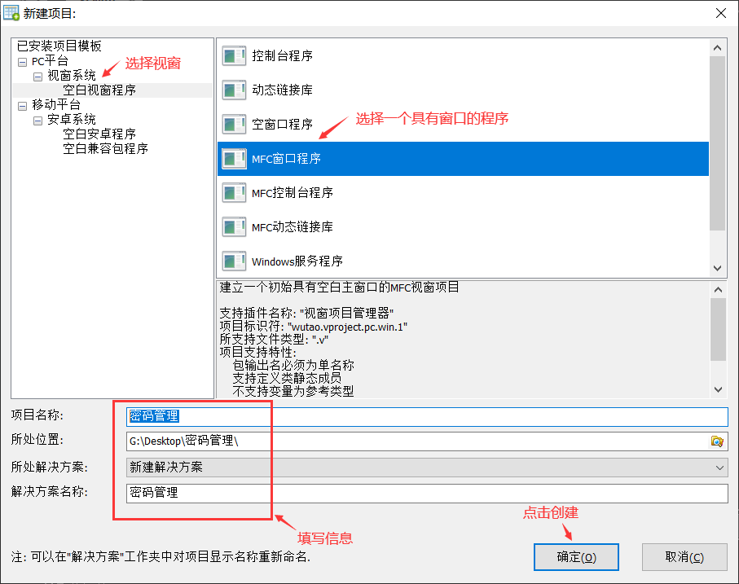
项目创建完毕：
注：如果已经在“主窗口对象”的属性栏中设置了窗口标题，则不可以在“我的主窗口”类的属性栏中设置标题。
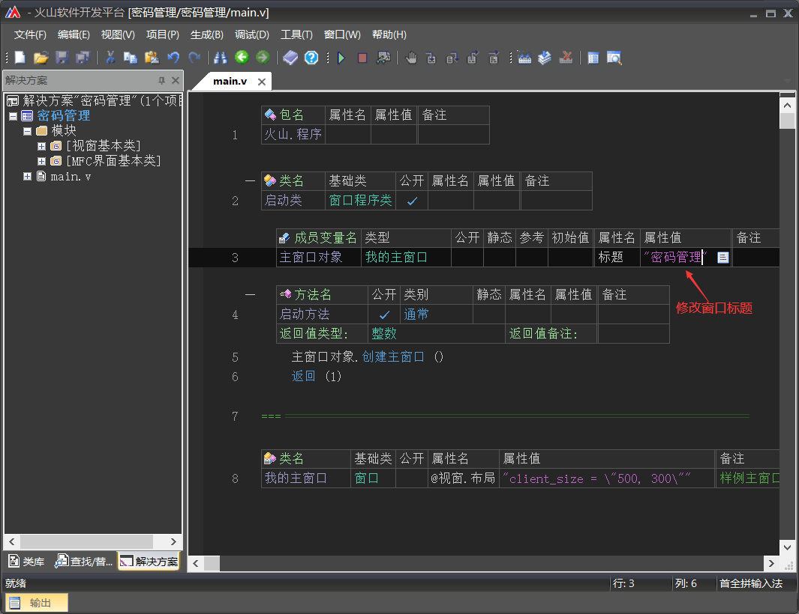
2.2 主窗口界面设计
使用快捷键“Ctrl + U”打开主窗口界面设计器。
(1) 拖放四个按钮到窗口上，并分别修改名称和标题，规范化的名称可便于后续代码编写。
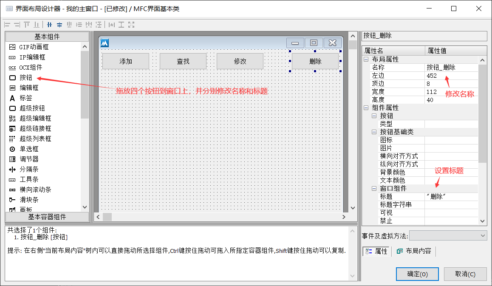
(2) 按钮如果分布不均匀，可以使用工具条中的“水平平均分布”进行平均操作。
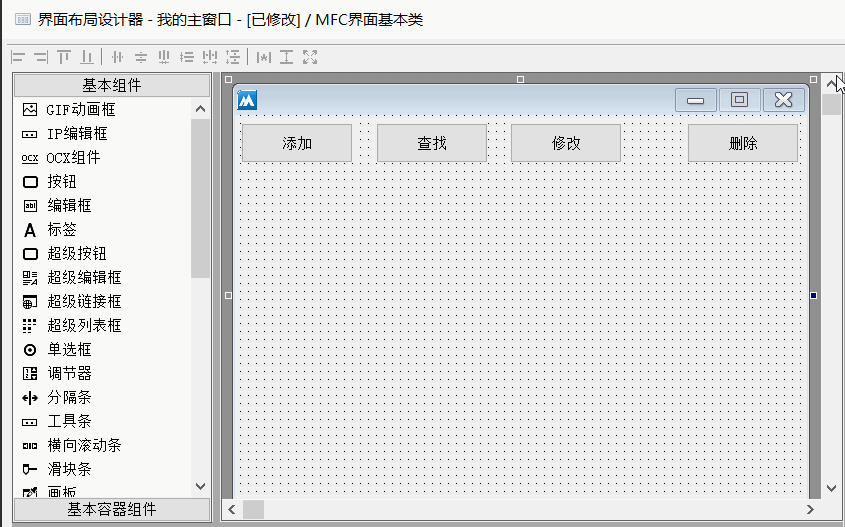
(3) 首先需要配置“MFC扩展界面支持类库1”模块，配置模块后才能看到“超级列表框”组件，将此组件拖放到窗口中设置一个合适的大小，并调整以下属性：
类型：报表列表框；
整行选择：真；
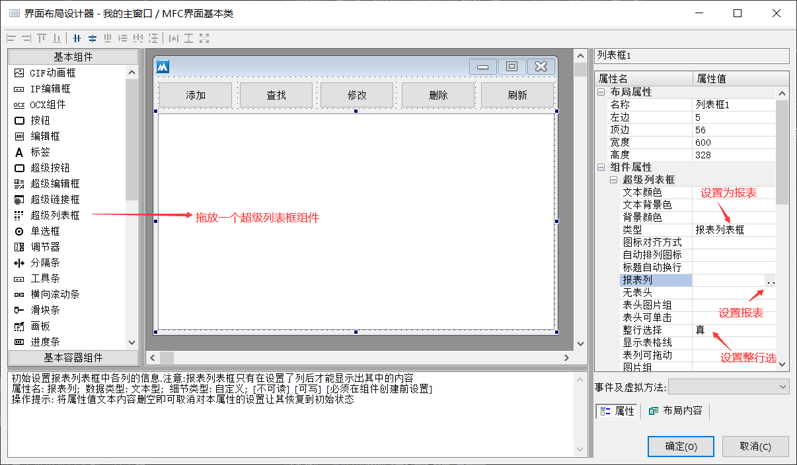
(4) 点击“报表列”属性按钮，会弹出一个窗口，在此窗口中设置报表列数据：
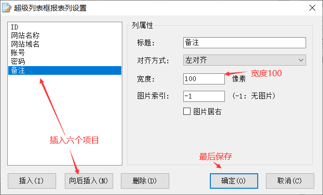
(5) 最终界面效果
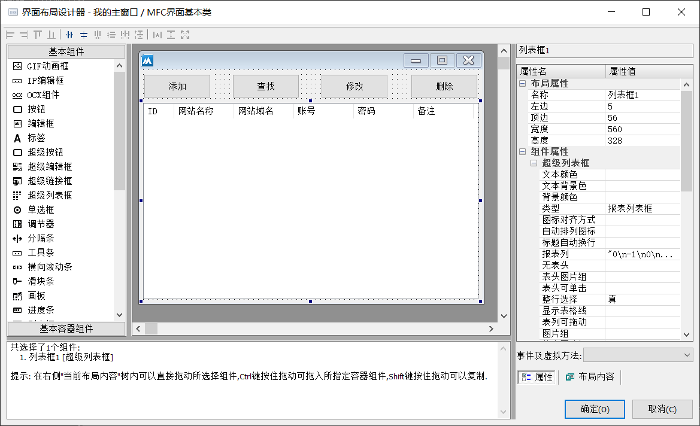
2.3 添加修改窗口界面设计
(1) 使用快捷键“Ctrl + D”新建一个类：
类名填写“添加修改窗口”，基础类填写“窗口”，并给此窗口设置“标题”属性。
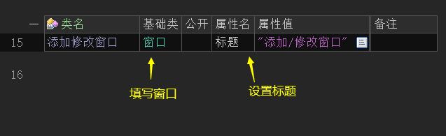
(2) 使用快捷键“Ctrl + U”打开添加修改窗口的界面设计器。
按照需求拖放标签、编辑框和按钮组件实现如下效果。
除标签组件外，可以对其它组件进行名称修改，以便于后续的代码编写。
备注编辑框可以额外设置一个“是否允许多行”属性为真。
注：当程序运行时可能会遇到这样的问题，获得焦点的编辑框并不是网站名称所处编辑框，而是其它的编辑框，这是因为编辑框组件的焦点，会按照放置顺序进行操作。
譬如：在界面设计时，如果首先放置的是备注编辑框，那么软件运行后此编辑框会首先获得焦点，按下Tab键切换焦点，也是按组件的放置顺序进行，如果放置的顺序不对，最终切换焦点的顺序也会是错乱的。
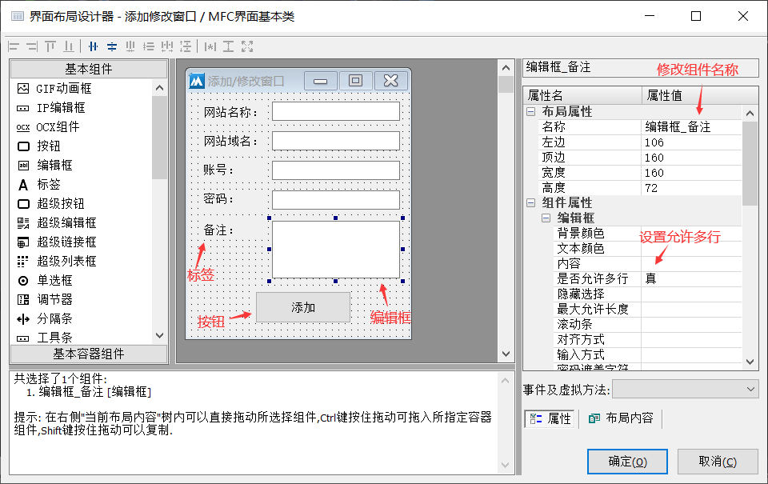
想要让焦点顺序正常，可以通过“布局内容”进行拖动组件修改焦点顺序。
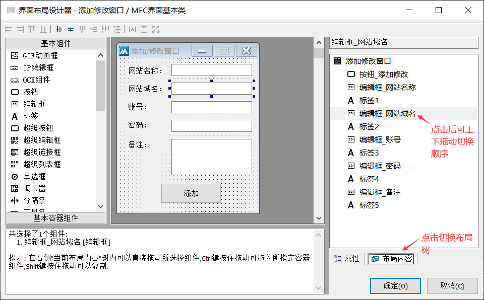
2.4 查找窗口界面设计
(1) 使用快捷键“Ctrl + D”新建一个类：
类名填写“查找窗口”，基础类填写“窗口”，并给此窗口设置“标题”属性。
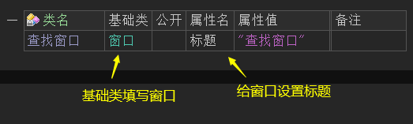
(2) 使用快捷键“Ctrl + U”打开查找窗口的界面设计器。
按照需求拖放标签、组合框、编辑框和按钮组件实现如下效果。
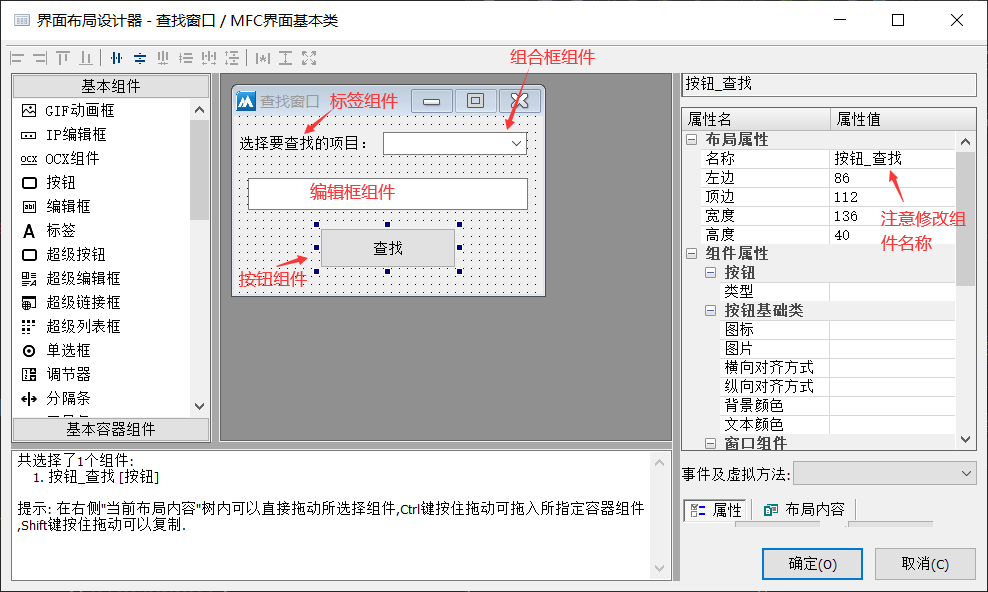
(3) 选中组合框组件，并设置如下属性：
类型：不可编辑下拉式（因要筛选的类型数据都是固定的，并且只有四个，所以不需要编辑）；
现行选中项：0；
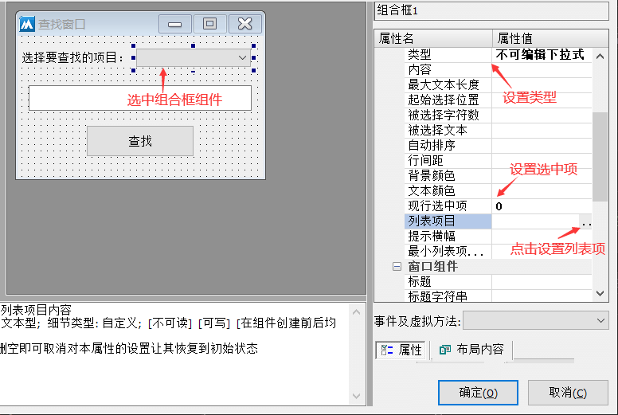
(4) 点击“列表项目”的属性按钮会弹出一个项目设置窗口，插入四个可选项目即可。
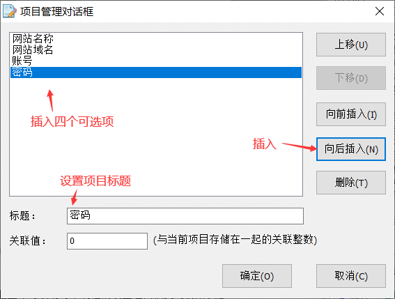
(5) 最终效果如下图：
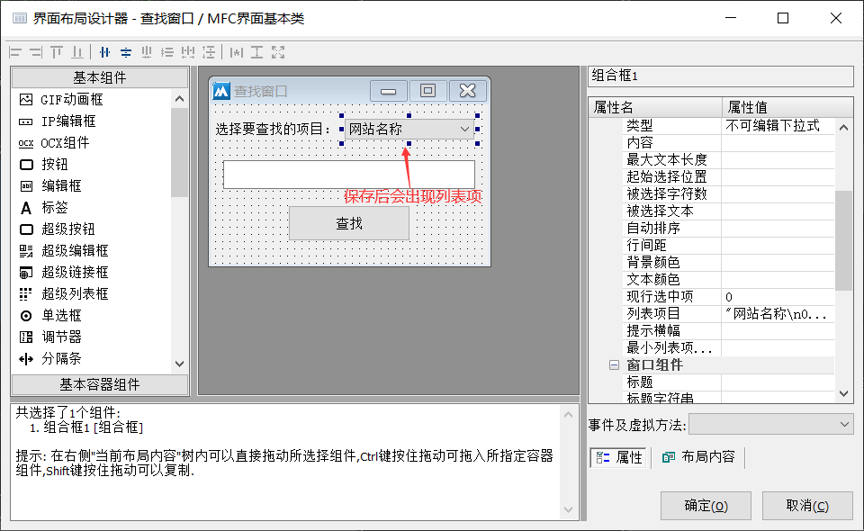
2.5 SQlite数据库表设计
SQlite是一种轻量级的数据库，不需要服务器可以在任何设备上使用，数据库内容存储在一个文件中，操作SQlite数据库实际上就是操作一个文件，通常文件后缀名为db。
数据库文件可以通过代码动态创建，也可以使用第三方工具生成，为了便于理解这里我们采用Navicat for SQlite软件来生成数据库文件，然后将生成的文件交给火山视窗操作。
(1) 启动软件后，点击连接按钮。
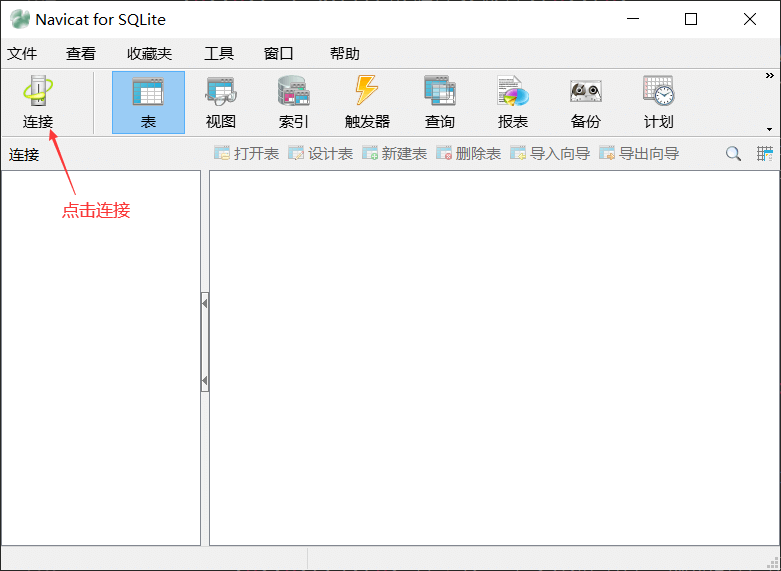
(2) 填写一个名称，选择SQLite3版本，最后设置一下数据库文件保存路径。
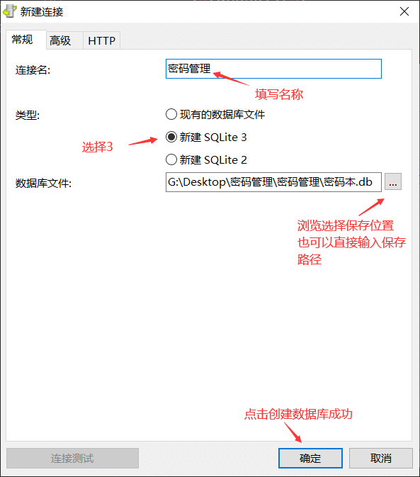
(3) 双击密码管理，随后双击main，就可以点击“新建表”按钮。
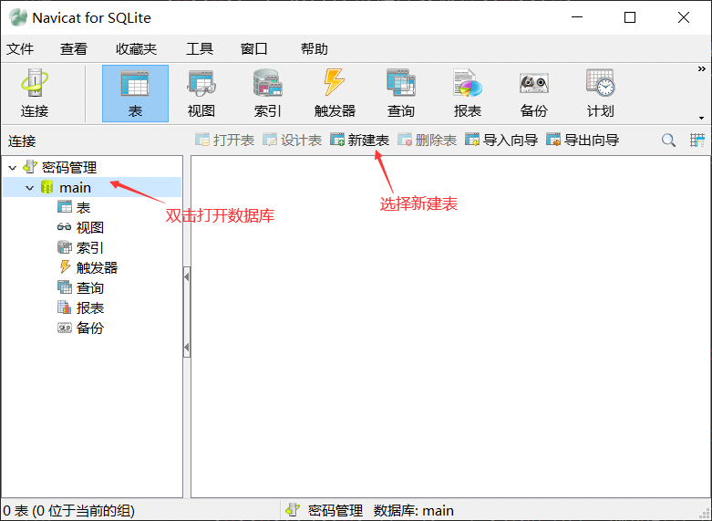
(4) 如下图所示设置自增ID字段，其作用是为了保证数据库中存在唯一值，方便后续删除，修改等操作。
注：数据库的字段名建议使用英文字母，因数据库中对中文字段名支持不友好。
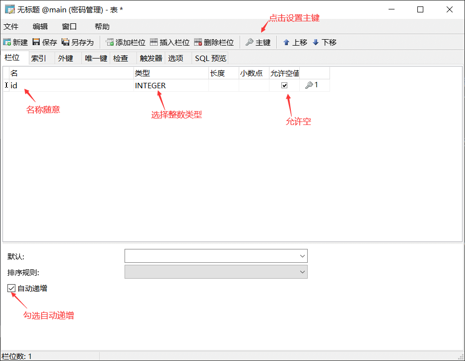
(5) 添加栏位即添加新字段，添加后输入名称选择文本类型。
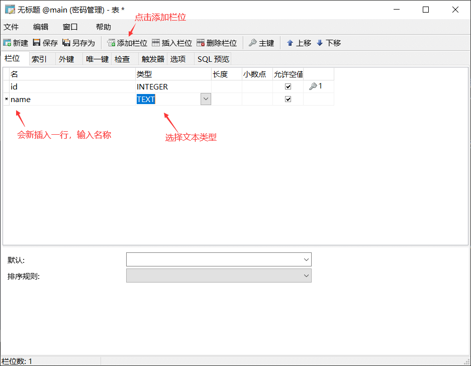
(6) 按照字段需求，重复的点击“添加栏位”，所有字段设置完毕后，点击“保存”按钮。
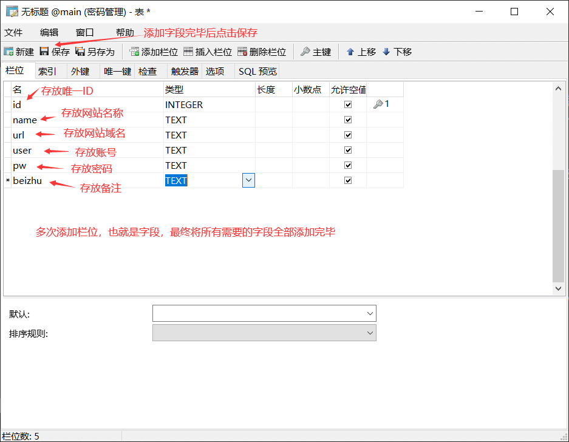
(7) 填写一个表名，随后点击确定，就可以关闭表设计窗口。
注：表名建议使用英文字母。
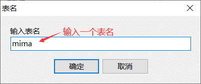
(8) 创建完毕后就可以打开此表，看到数据库字段信息。
至此数据库字段设置完毕，可以关闭本软件。
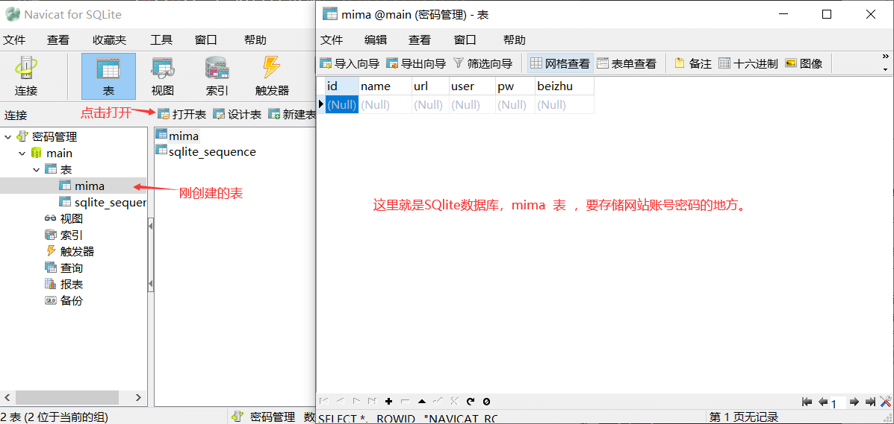
(9) 在保存位置会生成一个数据库文件，火山视窗操作的就是此文件。
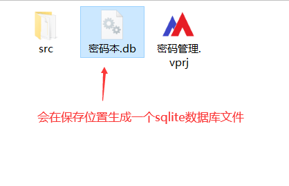
2.6 主窗口代码编写
(1) 首先在启动类的属性栏中使用“@视窗.附属文件”引用生成的数据库文件，最终此文件会在程序调试或者编译发布版时，将文件输出到软件目录中，从而方便程序调试和发布程序。
注意公开主窗口对象，便于在其它窗口中调用主窗口。
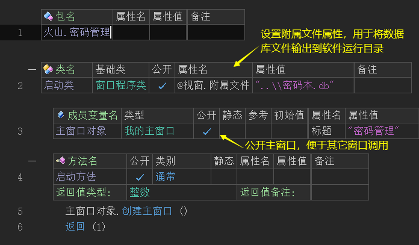
(2) 配置SQLite数据库模块，定义“SQLite数据库类”并公开，便于在其它窗口中调用数据库。
将另外两个窗口类也都定义成对象实例，便于后续创建窗口。
超级列表框组件也进行公开，便于在查找窗口中调用。
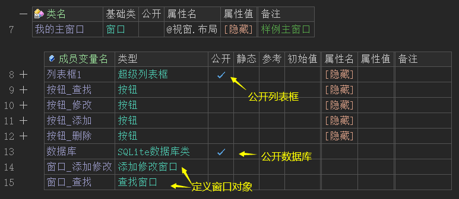
(3) 添加主窗口创建完毕事件，利用数据库对象打开程序运行目录下的数据库，打开成功后就调用“载入数据库内容()”方法载入内容，失败就弹出信息框并关闭窗口。
这里可能会有疑问，为什么要调用一个方法？而不是直接写载入内容的代码？
其实原因也很简单，载入内容在多个地方会用到，因此封装起来便于在操作。
方法解析：
数据库.打开()
顾名思义，就是打开一个数据库。
参数1：提供数据库文件路径.
参数2：提供数据库打开方式，此处务必使用SQLite打开方式.读写打开，否则数据库将无法正常操作。
取运行目录()
本方法可以取出当前程序的运行目录，在数据库.打开()方法中使用，用于表示数据库文件的完整路径。
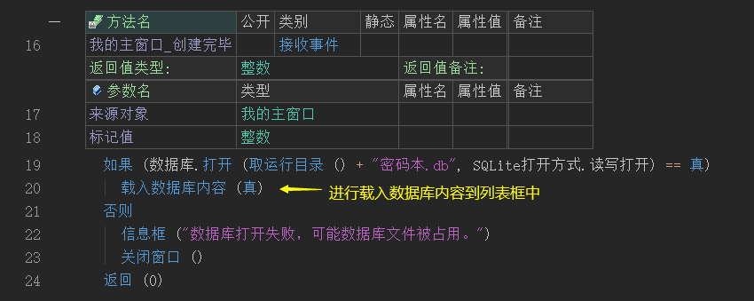
(4) 载入数据库内容方法如下：
使用快捷键“Ctrl+M”新建方法，插入一个逻辑参数并公开此方法，便于在其它窗口中调用本命令刷新。
其参数的作用，是用于首次打开时不进行提示没有查询到任何内容。
27-28行：
利用select查询语句取出记录集对象。
记录集：即数据库内容集合。
SQL语句解析：
SELECT * FROM mima，查询名称为“mima”表下的所有字段内容。
29-30行：
判断记录集是否有效，如果记录集有效则执行列表框全部删除命令。
31-38行：
数据库中的数据都是一行一行的获取，没办法通过某个命令一次性获取全部数据，在SQLite数据库中只能使用“判断循环”来实现。。
利用“判断循环”语句，判断其“记录集.执行语句()”的结果是否为“SQLite执行结果.下一行就绪”。
注：“执行语句()”的作用是执行“取记录集()”方法中提供的SQL语句。
如果满足条件就证明下一行数据被获取到，就可以在其子语句体内向利用记录集的“读文本数据()”方法读取数据填充到列表框中。
列表框方法解析：
插入表项()
本方法共有6个参数，在此处只需要填写参数2，提供要插入的标题信息即可，返回当前插入的表项索引。
置标题()
本方法共有3个参数，分别提供表项索引，列索引，欲设置标题即可。
其中读文本数据()方法需要提供字段索引，从0开始。
0：表示id字段;
1：表示name字段;
2：表示url字段;
3：表示user字段;
4：表示pw字段;
5：表示beizhu字段。
39-41行：
首先将记录集释放，并判断“是否首次打开”参数是否为假且列表框的表项数是否为0，如果都满足条件才提示没有查询到任何内容。
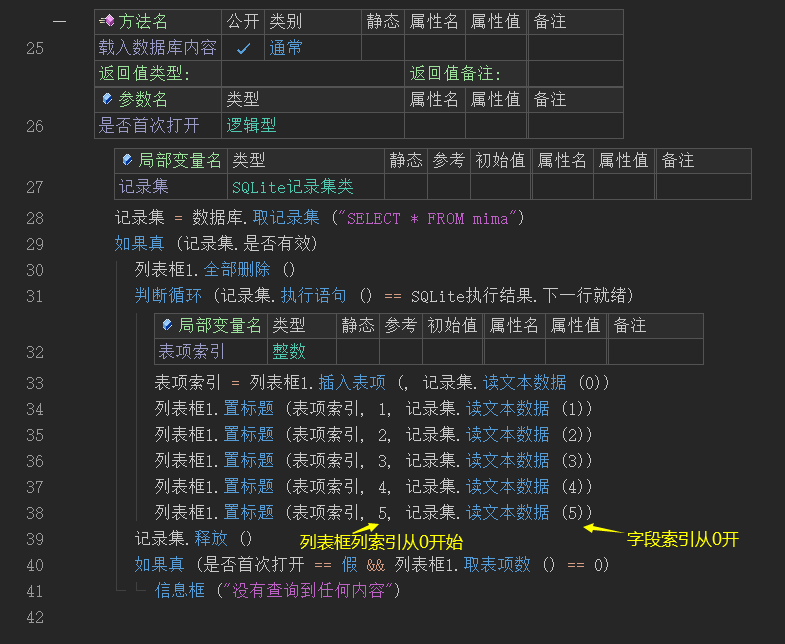
(5) 添加主窗口将被销毁事件，并关闭数据库释放数据库资源。
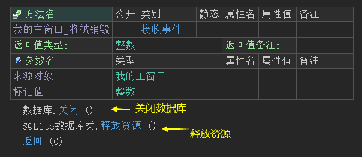
(6) 添加按钮被单击事件，并实现如下效果：
因删除和修改按钮点击时需要判断有没有选中项，所以需要在判断是否有选中项后再进行操作。
为什么要判断选中项？因为要取出列表框中显示的唯一ID值，根据ID值才能更加方便的删除或修改数据。
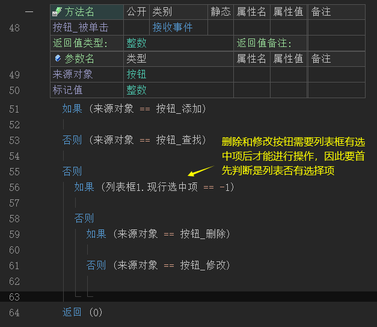
(7) 找到添加修改窗口，将其所有可能会被操作的组件进行公开，便于接下来的代码编写。
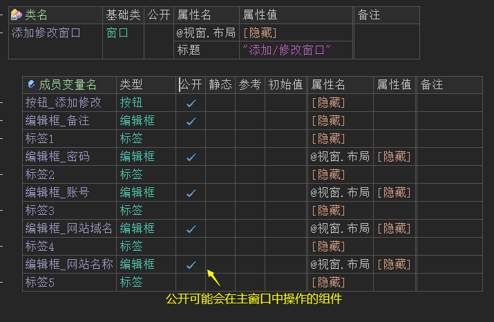
(8) “按钮_添加”被单击：
弹出添加修改窗口后，并修改此窗口中的按钮标题为“添加”，毕竟此窗口有两个作用，修改按钮标题后也便于识别当前窗口是添加还是修改。
“按钮_查找”被单击：
利用“创建弹出子窗口()”方法弹出查找窗口，参数填写本对象即可。
(9) 当不满足添加/查找按钮点击时，执行如下代码：
首先判断列表框是否有选中项，如果没有选中项则弹出信息框提示。
否则就取出列表框中现行选中项“ID”列的数据内容(即数据库中的唯一ID)，便于删除或修改按钮的点击操作。
取标题()方法解析：
本方法共有两个参数，参数1提供要取标题的表项索引（此处提供现行选中项即可），参数2提供列索引（从0开始）。
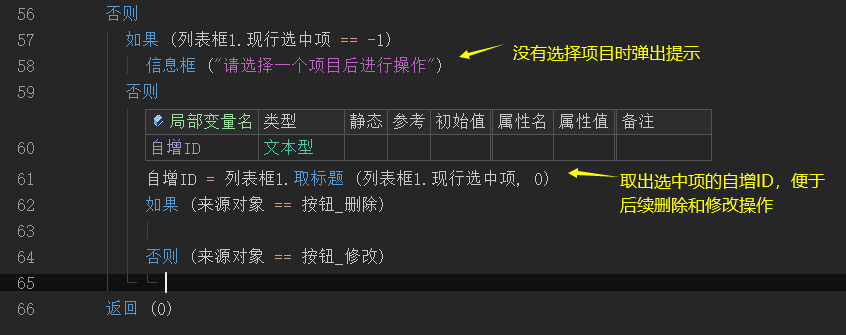
(10) “按钮_删除” 被单击
调用“数据库.执行SQL语句()”命令执行删除语句，其删除条件为id=自增ID，因为此值在数据库中是唯一值，因此不需要担心误删其它数据。
SQL语句解析：
DELETE FROM mima WHERE id = 自增ID
删除名称为“mima”表下“id”字段的值为“自增ID”的数据。
当执行结果返回0表示删除成功，成功后删除列表框的现行选中项，否则将错误原因取出并显示在信息框中。
执行SQL语句()方法解析：
本方法共有两个参数，参数1提供要执行的SQL语句，参数2提供一个文本型的变量，当执行错误时刻通过此变量取出错误原因。
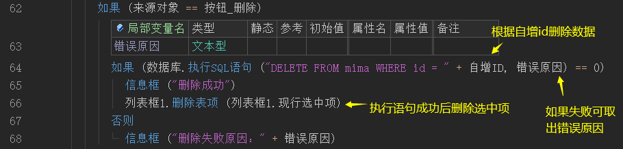
(11) “按钮_修改”被单击
弹出添加修改窗口后，修改按钮标题并给按钮的标记属性赋值自增ID，以便于后续在此窗口中进行执行修改数据库数据。
随后取出列表框现行选中项的数据，依次赋值给此窗口中的编辑框组件，便于识别修改的是哪条数据。
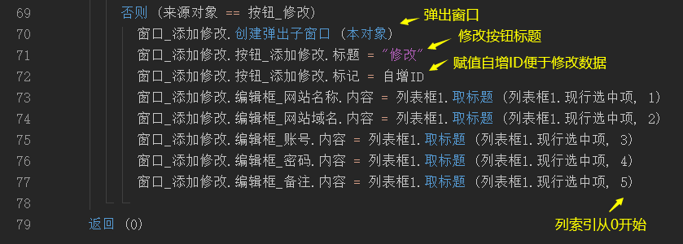
2.7 添加修改窗口代码编写
(1) 添加按钮被单击事件
因本窗口中只有一个按钮，因此可以不必判断来源对象参数。
因在弹出此窗口后都对按钮标题进行了修改，所以可通过判断按钮标题，根据不同的标题来执行不同的操作代码。
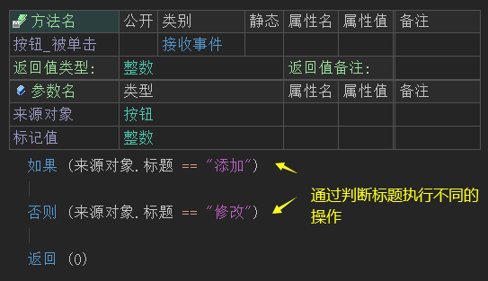
(2) 按钮内容为“添加”时执行：
102-103行：
首先判断所有编辑框的内容是否为空，如果为空就弹出信息框，提示用户进行输入内容。
105-113行：
106行：定义insert插入语句，其格式为“INSERT INTO 表名 (字段名1, 字段名2,...) VALUES ('值1', '值2',....)”
SQL语句解析：
在指定表的指定字段下，插入一行新的值。
108行：利用“取程序()”命令可取出启动类对象，然后就可以调用被公开的主窗口对象、调用数据库的执行SQL语句方法，执行定义好的插入语句.
如果执行结果返回0表示执行成功，继续利用“取程序()”，调用主窗口中的“载入数据内容()”方法来刷新列表显示，并关闭当前窗口。
当执行失败时，则取出错误原因。
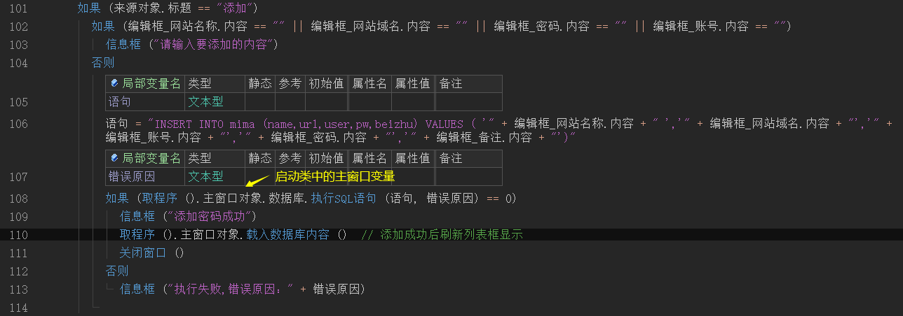
(3) 按钮内容为“修改”时执行：
首先定义update更新语句，在更新语句中就利用到了赋值给按钮组件“标记”属性的ID值，取出ID值写到sql语句的where条件中。
SQL语句解析：
UPDATE 表名 SET 字段1 = '值1', 字段2 = '值2' WHERE 条件字段 = '条件值'
根据条件自动提供的条件值，在指定表中进行筛选，筛选后将“字段1”对应的值修改为“值1”，“字段2”对应的值修改为“值2”，如果存在多个字段则以此类推，多个字段之间需要用半角逗号分隔。
最后利用“取程序()”调用主窗口中数据库的执行SQL语句方法。
如果执行成功则调用“载入数据库内容()”方法来刷新列表框并关闭当前窗口，否则提示错误原因。
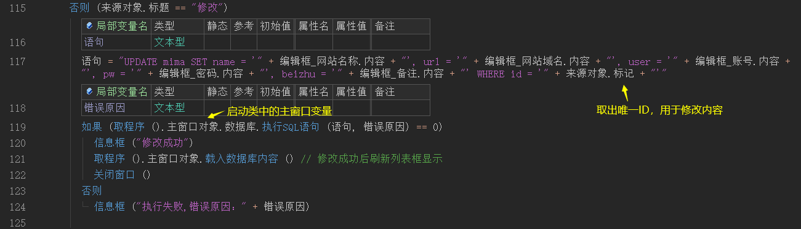
2.8 查找窗口代码编写
(1) 添加查找窗口创建完毕事件，在此窗口下让编辑框获得输入焦点。
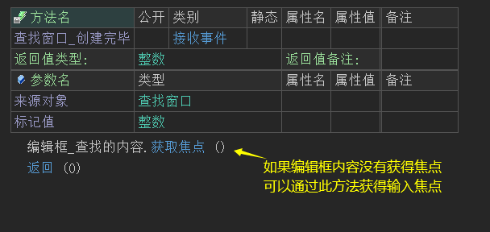
(2) 添加按钮被单击事件，因本窗口中只有一个按钮，因此可以不判断来源对象。
首先判断编辑框的内容是否为空，并提示用户输入内容。
如果不为空，则利用“取程序()”方法取出主窗口中的列表框组件进行“查找表项()”操作。
查找表项()方法解析：
本方法共有4个参数。
参数1：提供要查找的内容；
参数2：提供起始查找位置，默认为0；
参数3：是否精确匹配，默认为真。
参数4：提供要查找的列索引。
当前情况下只需要填写参数1和参数4即可。
如果查找结果为-1，则表示没有找到，此时应弹出提示告知用户。
否则就让列表框组件获取焦点，并选中查找到的表项，最后关闭当前窗口。
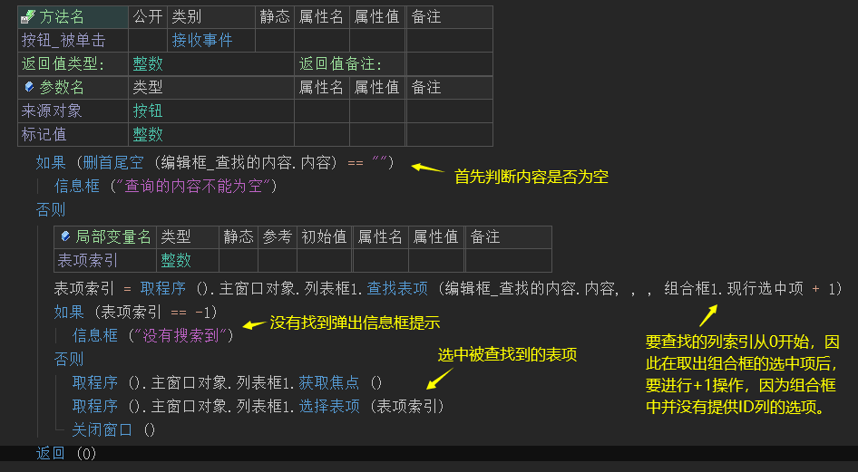
2.9 调试运行
添加测试：
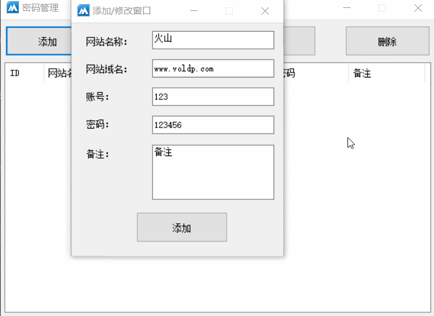
查找测试：
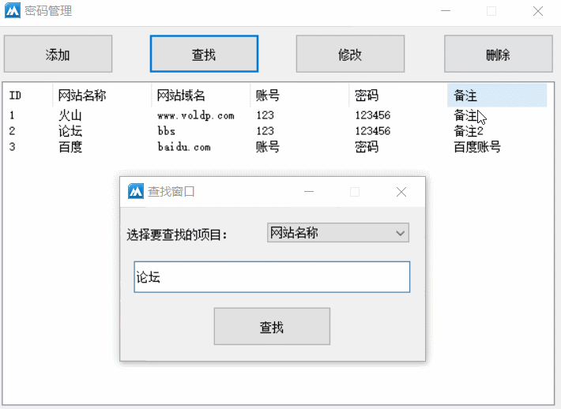
修改测试：
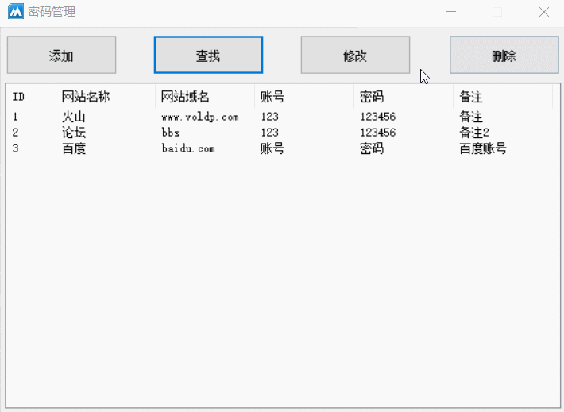
删除测试：
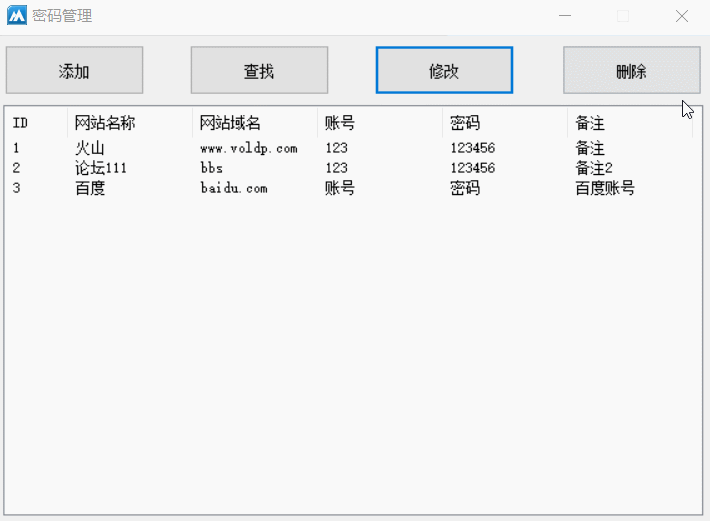
在调试时，可能会遇到一个问题，就是当关闭调试的程序后，重新调试时，会发现所有的数据都清空了？这是为什么？
其实很简单，这是因为“@视窗.附属文件”每次调试或编译发布版时，都会重新将数据库文件输出，这就导致原有的数据库文件已经被覆盖，所以重新调试时数据就没了，如果想要调试时保留数据也很简单，首次调试后，将附属文件屏蔽掉即可。
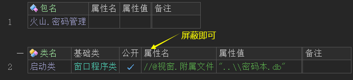
3、案例下载
点击下载当前教程案例。